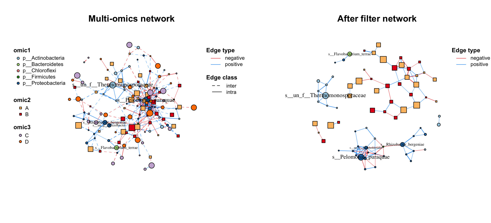
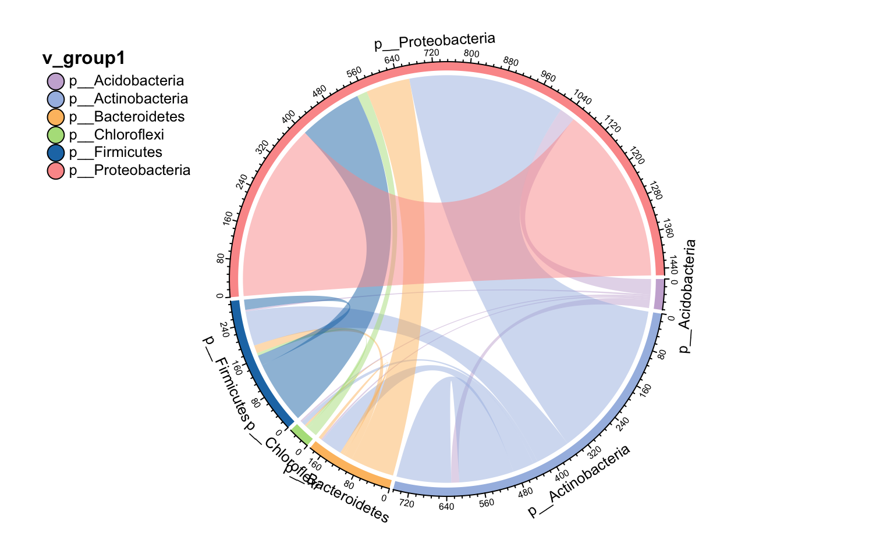
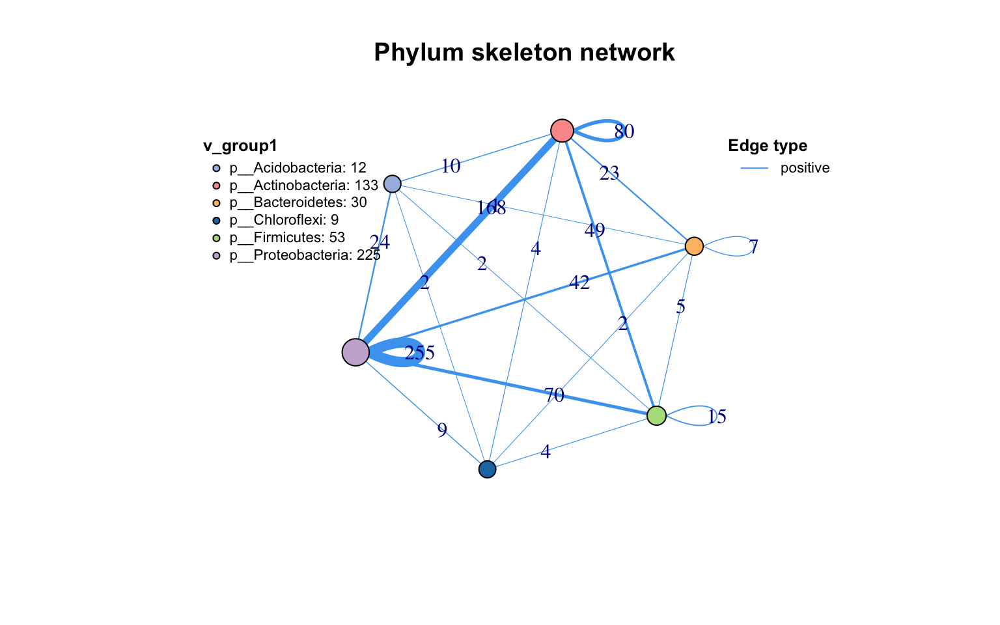
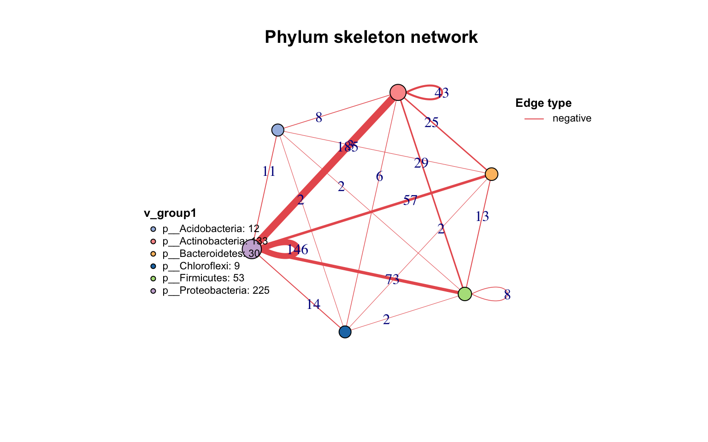

Chapter 4 Manipulation
After we build a network, we can see the class of our network is metanet, which is a derived object from igraph. So all functions used for igraph can also use on our network.
data(otutab,package = "MetaNet")
t(otutab) -> totu
c_net_cal(totu,method = "spearman", filename =F,p.adjust.method = NULL) -> corr
c_net_build(corr,r_thres = 0.6,p_thres = 0.05,del_single = T) -> co_net
class(co_net)## [1] "metanet" "igraph"Besides, there are some other functions for us to manipulate the metanet easily. ## Attributes We could get the attributes of whole network, each vertex and each edge by get_() as dataframe:
#get network attributes
get_n(co_net)## n_type
## 1 single#get vertex attributes
get_v(co_net)%>%head(5)## name v_group v_class size
## 1 s__un_f__Thermomonosporaceae v_group1 v_group1 4
## 2 s__Pelomonas_puraquae v_group1 v_group1 4
## 3 s__Rhizobacter_bergeniae v_group1 v_group1 4
## 4 s__Flavobacterium_terrae v_group1 v_group1 4
## 5 s__un_g__Rhizobacter v_group1 v_group1 4
## label shape color
## 1 s__un_f__Thermomonosporaceae circle #a6bce3
## 2 s__Pelomonas_puraquae circle #a6bce3
## 3 s__Rhizobacter_bergeniae circle #a6bce3
## 4 s__Flavobacterium_terrae circle #a6bce3
## 5 s__un_g__Rhizobacter circle #a6bce3#get edge attributes
get_e(co_net)%>%head(5)## id from to weight
## 1 1 s__un_f__Thermomonosporaceae s__Actinocorallia_herbida 0.6759546
## 2 2 s__un_f__Thermomonosporaceae s__Kribbella_catacumbae 0.6742386
## 3 3 s__un_f__Thermomonosporaceae s__Kineosporia_rhamnosa 0.7378741
## 4 4 s__un_f__Thermomonosporaceae s__un_f__Micromonosporaceae 0.6236449
## 5 5 s__un_f__Thermomonosporaceae s__Flavobacterium_saliperosum 0.6045747
## cor p.adjust p.value e_type width v_group_from
## 1 0.6759546 0.0020739524 0.0020739524 positive 0.6759546 v_group1
## 2 0.6742386 0.0021502138 0.0021502138 positive 0.6742386 v_group1
## 3 0.7378741 0.0004730567 0.0004730567 positive 0.7378741 v_group1
## 4 0.6236449 0.0056818984 0.0056818984 positive 0.6236449 v_group1
## 5 0.6045747 0.0078660171 0.0078660171 positive 0.6045747 v_group1
## v_group_to e_class color lty
## 1 v_group1 intra #48A4F0 1
## 2 v_group1 intra #48A4F0 1
## 3 v_group1 intra #48A4F0 1
## 4 v_group1 intra #48A4F0 1
## 5 v_group1 intra #48A4F0 1And we can see, some attributes have been set when we build the network like v_group, these are internal attributes of metanet and are related to the following analysis and visualization.
| Attribute name | Description |
|---|---|
| v_group | the big group for network, usually one omics data produces one group. Related to the vertex shape. |
| v_class | some annotation of vertex, maybe classification or network modules. Related to the vertex color. |
| size | numeric variable assign to the vertex size. |
| label | assign to the vertex label, replace to NA to hide some labels you don’t want to display. |
| e_type | the type of edges, often be the positive or negative according to correlation. Related to the edge color. |
| width | numeric variable assign to the edge width. |
| e_class | the second type of edges, often be the intra or inter according to two vertex group. Related to the edge line type. |
We will talk about how to set these attributes by ourselves for some specific analysis later.
4.1 Annotation
Sometimes we have lots of annotation tables need to add to the network, such as abundance table, taxonomy table and so on, we can use anno_vertex() and anno_edge() to do this. The annotation dataframe needs have rowname or a “name” column, anno_vertex() will automatically match the vertex name and combine the table.
anno_vertex(co_net, taxonomy)->co_net1
get_v(co_net1)%>%head(5)## name v_group v_class size
## 1 s__un_f__Thermomonosporaceae v_group1 v_group1 4
## 2 s__Pelomonas_puraquae v_group1 v_group1 4
## 3 s__Rhizobacter_bergeniae v_group1 v_group1 4
## 4 s__Flavobacterium_terrae v_group1 v_group1 4
## 5 s__un_g__Rhizobacter v_group1 v_group1 4
## label shape color Kingdom Phylum
## 1 s__un_f__Thermomonosporaceae circle #a6bce3 k__Bacteria p__Actinobacteria
## 2 s__Pelomonas_puraquae circle #a6bce3 k__Bacteria p__Proteobacteria
## 3 s__Rhizobacter_bergeniae circle #a6bce3 k__Bacteria p__Proteobacteria
## 4 s__Flavobacterium_terrae circle #a6bce3 k__Bacteria p__Bacteroidetes
## 5 s__un_g__Rhizobacter circle #a6bce3 k__Bacteria p__Proteobacteria
## Class Order Family
## 1 c__Actinobacteria o__Actinomycetales f__Thermomonosporaceae
## 2 c__Betaproteobacteria o__Burkholderiales f__Comamonadaceae
## 3 c__Gammaproteobacteria o__Pseudomonadales f__Pseudomonadaceae
## 4 c__Flavobacteriia o__Flavobacteriales f__Flavobacteriaceae
## 5 c__Gammaproteobacteria o__Pseudomonadales f__Pseudomonadaceae
## Genus Species
## 1 g__un_f__Thermomonosporaceae s__un_f__Thermomonosporaceae
## 2 g__Pelomonas s__Pelomonas_puraquae
## 3 g__Rhizobacter s__Rhizobacter_bergeniae
## 4 g__Flavobacterium s__Flavobacterium_terrae
## 5 g__Rhizobacter s__un_g__Rhizobacteranno_edge() receives the same format annotation dataframe with anno_vertex(), it will automatically match the “from” and “to” columns so that you can summary the links.
anno_edge(co_net, select(taxonomy,"Phylum"))->co_net1
get_e(co_net1)%>%head(5)## id from to weight
## 1 1 s__un_f__Thermomonosporaceae s__Actinocorallia_herbida 0.6759546
## 2 2 s__un_f__Thermomonosporaceae s__Kribbella_catacumbae 0.6742386
## 3 3 s__un_f__Thermomonosporaceae s__Kineosporia_rhamnosa 0.7378741
## 4 4 s__un_f__Thermomonosporaceae s__un_f__Micromonosporaceae 0.6236449
## 5 5 s__un_f__Thermomonosporaceae s__Flavobacterium_saliperosum 0.6045747
## cor p.adjust p.value e_type width v_group_from
## 1 0.6759546 0.0020739524 0.0020739524 positive 0.6759546 v_group1
## 2 0.6742386 0.0021502138 0.0021502138 positive 0.6742386 v_group1
## 3 0.7378741 0.0004730567 0.0004730567 positive 0.7378741 v_group1
## 4 0.6236449 0.0056818984 0.0056818984 positive 0.6236449 v_group1
## 5 0.6045747 0.0078660171 0.0078660171 positive 0.6045747 v_group1
## v_group_to e_class color lty Phylum_from Phylum_to
## 1 v_group1 intra #48A4F0 1 p__Actinobacteria p__Actinobacteria
## 2 v_group1 intra #48A4F0 1 p__Actinobacteria p__Actinobacteria
## 3 v_group1 intra #48A4F0 1 p__Actinobacteria p__Actinobacteria
## 4 v_group1 intra #48A4F0 1 p__Actinobacteria p__Actinobacteria
## 5 v_group1 intra #48A4F0 1 p__Actinobacteria p__BacteroidetesWe provide a function c_net_set() for easily annotation if you have more than one table.
Abundance_df=data.frame("Abundance"=colSums(totu))
co_net1<-c_net_set(co_net,taxonomy,Abundance_df)
get_v(co_net1)%>%head(5)## name v_group v_class size
## 1 s__un_f__Thermomonosporaceae v_group1 v_group1 4
## 2 s__Pelomonas_puraquae v_group1 v_group1 4
## 3 s__Rhizobacter_bergeniae v_group1 v_group1 4
## 4 s__Flavobacterium_terrae v_group1 v_group1 4
## 5 s__un_g__Rhizobacter v_group1 v_group1 4
## label shape color Kingdom Phylum
## 1 s__un_f__Thermomonosporaceae circle #a6bce3 k__Bacteria p__Actinobacteria
## 2 s__Pelomonas_puraquae circle #a6bce3 k__Bacteria p__Proteobacteria
## 3 s__Rhizobacter_bergeniae circle #a6bce3 k__Bacteria p__Proteobacteria
## 4 s__Flavobacterium_terrae circle #a6bce3 k__Bacteria p__Bacteroidetes
## 5 s__un_g__Rhizobacter circle #a6bce3 k__Bacteria p__Proteobacteria
## Class Order Family
## 1 c__Actinobacteria o__Actinomycetales f__Thermomonosporaceae
## 2 c__Betaproteobacteria o__Burkholderiales f__Comamonadaceae
## 3 c__Gammaproteobacteria o__Pseudomonadales f__Pseudomonadaceae
## 4 c__Flavobacteriia o__Flavobacteriales f__Flavobacteriaceae
## 5 c__Gammaproteobacteria o__Pseudomonadales f__Pseudomonadaceae
## Genus Species Abundance
## 1 g__un_f__Thermomonosporaceae s__un_f__Thermomonosporaceae 26147
## 2 g__Pelomonas s__Pelomonas_puraquae 25217
## 3 g__Rhizobacter s__Rhizobacter_bergeniae 16592
## 4 g__Flavobacterium s__Flavobacterium_terrae 16484
## 5 g__Rhizobacter s__un_g__Rhizobacter 13895If you have a vector and you absolutely know it matches the vertex name of network, you can use igraph method to annotate (Don’t recommend), same as the edge annotate vector:
co_net1=co_net
#add vertex attribute
V(co_net1)$new_attri=seq_len(length(co_net1))
get_v(co_net1)%>%head(5)## name v_group v_class size
## 1 s__un_f__Thermomonosporaceae v_group1 v_group1 4
## 2 s__Pelomonas_puraquae v_group1 v_group1 4
## 3 s__Rhizobacter_bergeniae v_group1 v_group1 4
## 4 s__Flavobacterium_terrae v_group1 v_group1 4
## 5 s__un_g__Rhizobacter v_group1 v_group1 4
## label shape color new_attri
## 1 s__un_f__Thermomonosporaceae circle #a6bce3 1
## 2 s__Pelomonas_puraquae circle #a6bce3 2
## 3 s__Rhizobacter_bergeniae circle #a6bce3 3
## 4 s__Flavobacterium_terrae circle #a6bce3 4
## 5 s__un_g__Rhizobacter circle #a6bce3 5#add edge attribute
E(co_net1)$new_attri="new attribute"
get_e(co_net1)%>%head(5)## id from to weight
## 1 1 s__un_f__Thermomonosporaceae s__Actinocorallia_herbida 0.6759546
## 2 2 s__un_f__Thermomonosporaceae s__Kribbella_catacumbae 0.6742386
## 3 3 s__un_f__Thermomonosporaceae s__Kineosporia_rhamnosa 0.7378741
## 4 4 s__un_f__Thermomonosporaceae s__un_f__Micromonosporaceae 0.6236449
## 5 5 s__un_f__Thermomonosporaceae s__Flavobacterium_saliperosum 0.6045747
## cor p.adjust p.value e_type width v_group_from
## 1 0.6759546 0.0020739524 0.0020739524 positive 0.6759546 v_group1
## 2 0.6742386 0.0021502138 0.0021502138 positive 0.6742386 v_group1
## 3 0.7378741 0.0004730567 0.0004730567 positive 0.7378741 v_group1
## 4 0.6236449 0.0056818984 0.0056818984 positive 0.6236449 v_group1
## 5 0.6045747 0.0078660171 0.0078660171 positive 0.6045747 v_group1
## v_group_to e_class color lty new_attri
## 1 v_group1 intra #48A4F0 1 new attribute
## 2 v_group1 intra #48A4F0 1 new attribute
## 3 v_group1 intra #48A4F0 1 new attribute
## 4 v_group1 intra #48A4F0 1 new attribute
## 5 v_group1 intra #48A4F0 1 new attribute4.2 Filter (Sub-net)
After setting your network properly, you may need to analysis part of the whole network (especially in the multi-omics analysis), c_net_filter() can get the sub-net conveniently (Figure 4.1), you can put lots of filter conditions in:
data("multi_net",package = "MetaNet")
multi2=c_net_filter(multi1,v_group=c("omic1","omic2"),e_class="intra")
par(mfrow=c(1,2))
plot(multi1,lty_legend=T)#before filter
plot(multi2,legend=T,col_legend=F,main="After filter network") #after filter
Figure 4.1: From a whole network filter a sub-net.
4.3 Skeleton
If you want to summary the edges source and target according to one group, summ_2col is a easy way to get this information. direct = F argument means this is a undirected network, so “a-b” and “b-a” will summary to one type edge.
anno_edge(co_net, select(taxonomy,"Phylum"))->co_net1
df=get_e(co_net1)[,c("Phylum_from","Phylum_to")]
summ_2col(df,direct = F)%>%arrange(-count)->Phylum_from_to
#head(Phylum_from_to)
knitr::kable(head(Phylum_from_to,5),caption = "Summary of edges according to Phylum")| Phylum_from | Phylum_to | count |
|---|---|---|
| p__Proteobacteria | p__Proteobacteria | 401 |
| p__Actinobacteria | p__Proteobacteria | 353 |
| p__Firmicutes | p__Proteobacteria | 143 |
| p__Actinobacteria | p__Actinobacteria | 123 |
| p__Bacteroidetes | p__Proteobacteria | 99 |
kbl(Phylum_from_to,caption = "Summary of edges according to Phylum") %>%
kable_paper() %>%
scroll_box(width = "500px", height = "200px")| Phylum_from | Phylum_to | count |
|---|---|---|
| p__Proteobacteria | p__Proteobacteria | 401 |
| p__Actinobacteria | p__Proteobacteria | 353 |
| p__Firmicutes | p__Proteobacteria | 143 |
| p__Actinobacteria | p__Actinobacteria | 123 |
| p__Bacteroidetes | p__Proteobacteria | 99 |
| p__Actinobacteria | p__Firmicutes | 78 |
| p__Actinobacteria | p__Bacteroidetes | 48 |
| p__Acidobacteria | p__Proteobacteria | 35 |
| p__Chloroflexi | p__Proteobacteria | 23 |
| p__Firmicutes | p__Firmicutes | 23 |
| p__Acidobacteria | p__Actinobacteria | 18 |
| p__Bacteroidetes | p__Firmicutes | 18 |
| p__Actinobacteria | p__Chloroflexi | 10 |
| p__Bacteroidetes | p__Bacteroidetes | 7 |
| p__Chloroflexi | p__Firmicutes | 6 |
| p__Acidobacteria | p__Bacteroidetes | 4 |
| p__Acidobacteria | p__Chloroflexi | 4 |
| p__Acidobacteria | p__Firmicutes | 4 |
| p__Bacteroidetes | p__Chloroflexi | 4 |
Then you can use sankey plot to display the links.
pcutils::my_sankey(Phylum_from_to,dragY =T,fontSize = 10,width=400)Figure 4.2: Sankey plot display edges according to Phylum
Or use the circlize plot to display. link_stat() have more arguments than summ_2col() for summary edges.
anno_vertex(co_net, select(taxonomy,"Phylum"))->co_net1
links_stat(co_net1,group = "Phylum",inter = "all",direct = F)
Figure 4.3: Circlize plot display edges according to Phylum
Other important action for a network is extracting the skeleton according to one group, which I call get skeleton plot. get_group_skeleton() can annotate all nodes with a group then combine each group nodes as a big node, and calculate new links between all groups. This plot shows the flows between different groups clearly. By the way, the result will display by different edge types, if you just want summary all edges, set the e_type as one same character (use c_net_set() as 5.1.1).
co_net1<-c_net_set(co_net,taxonomy,Abundance_df)
get_group_skeleton(co_net1,Group = "Phylum",direct = F)->ske_net
plot(ske_net,vertex.label=NA)
Figure 4.4: Skeleton plot according to the Phylum.

Figure 4.5: Skeleton plot according to the Phylum.